Crusty
Что сделали
Концепция · Логотип · Айдентика · Леттеринг · Графика · Иллюстрация
Итальянско-американский характер.
Визуальная система для бистро: красно-белая клетка, характерные персонажи и выразительная типографика. Логотип, леттеринг и иллюстрации складываются в узнаваемый образ бренда.
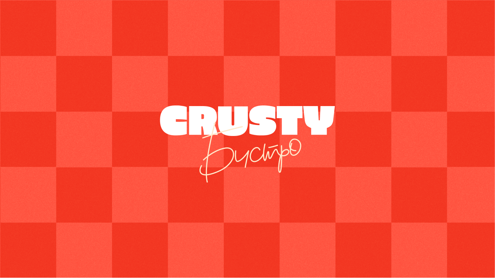
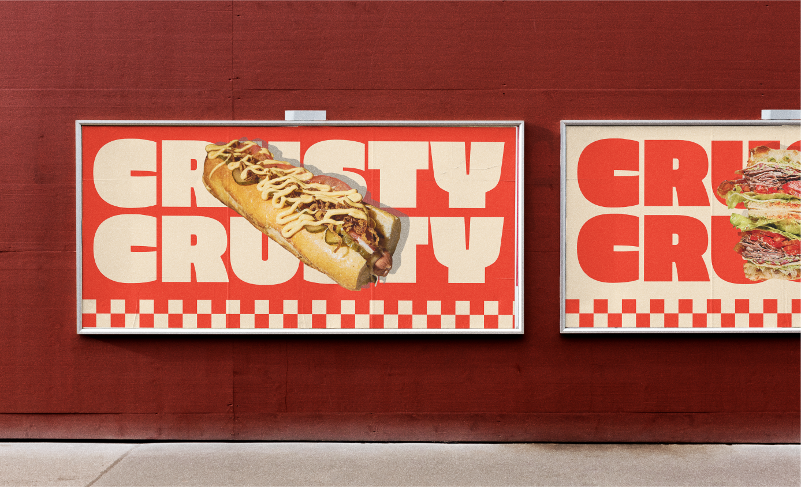
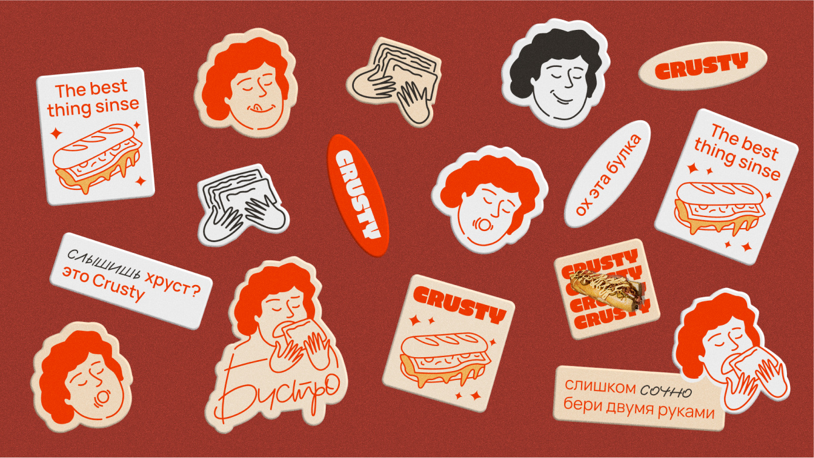
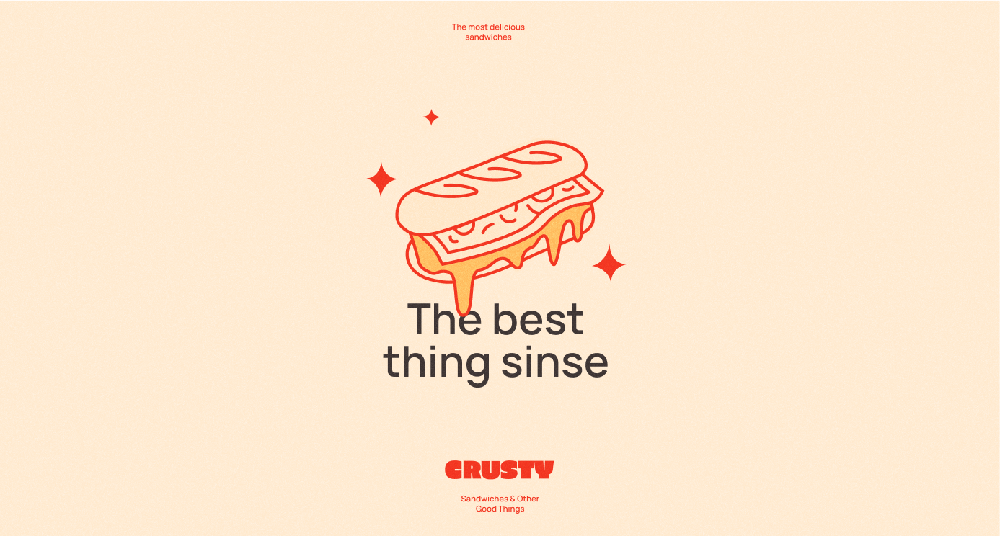
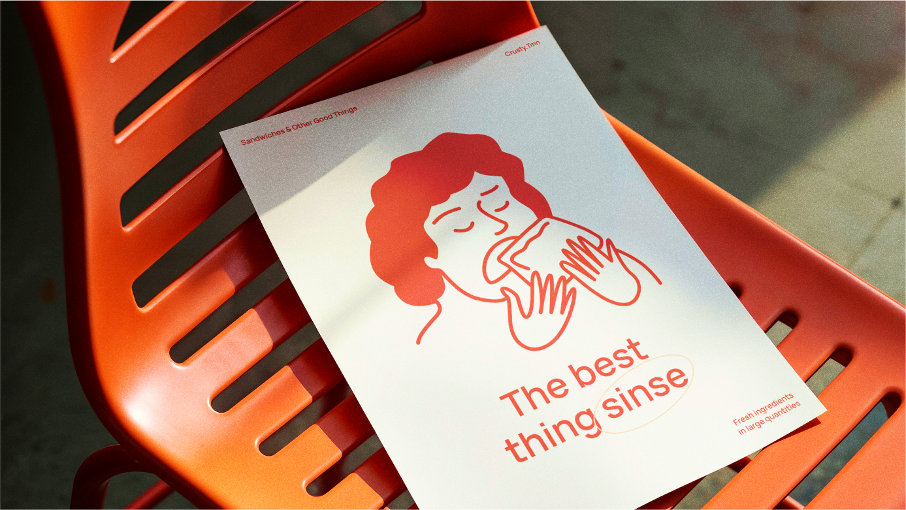
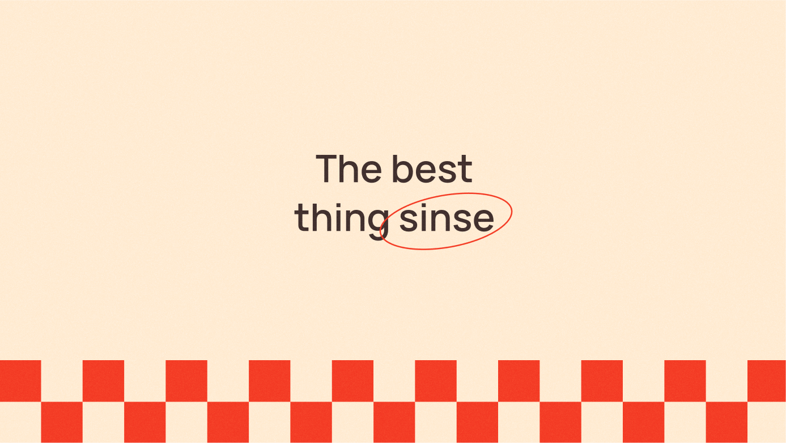
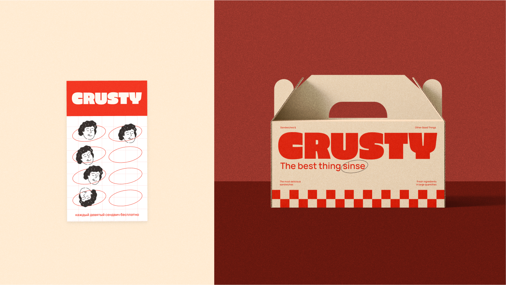
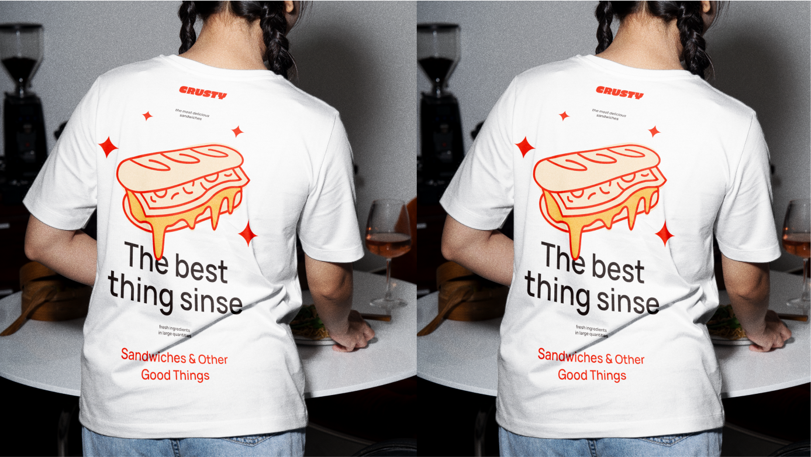
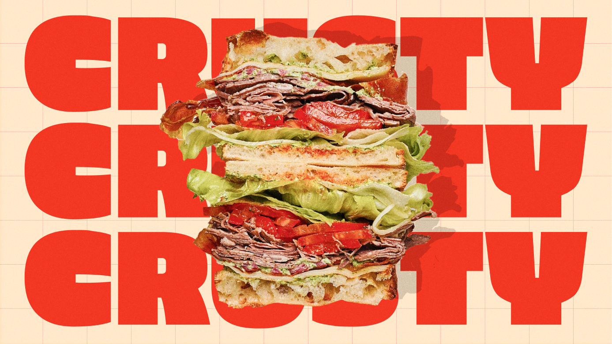
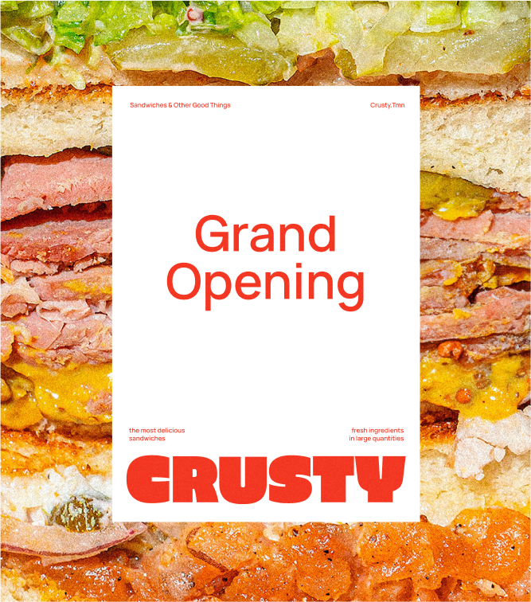
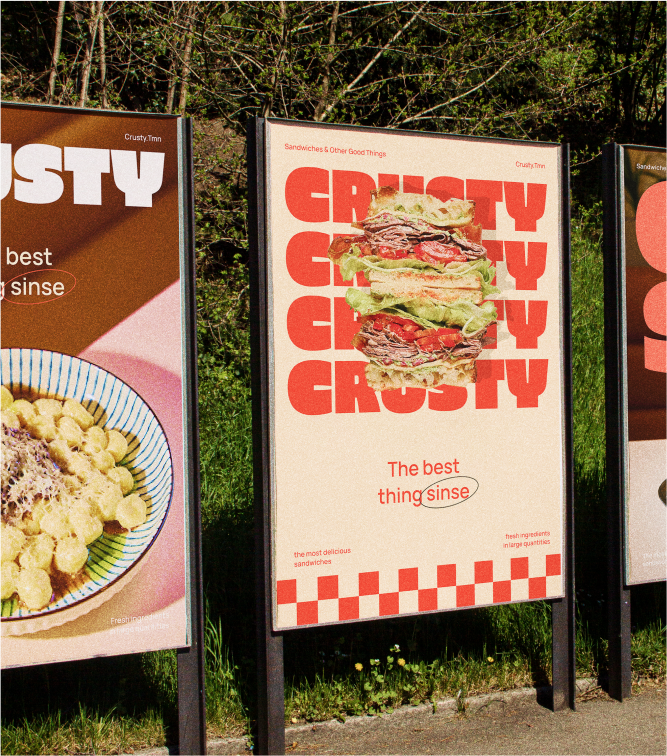
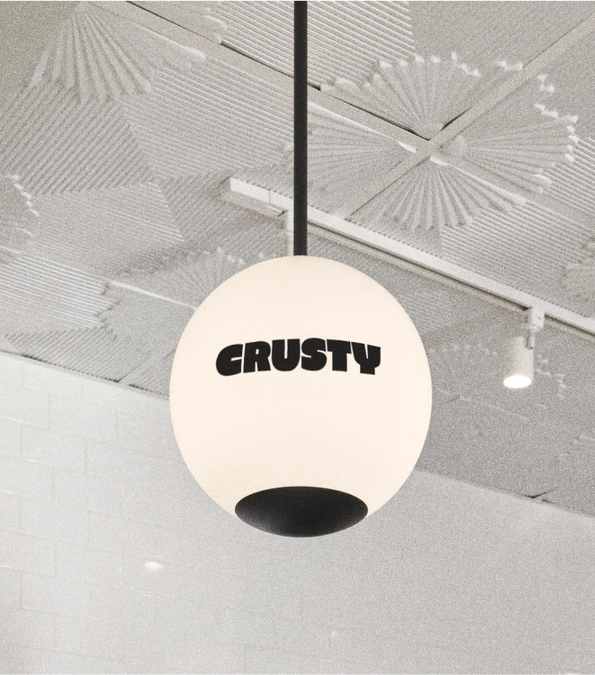
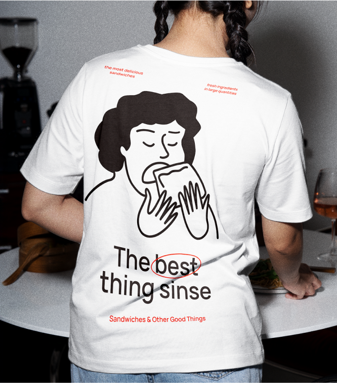
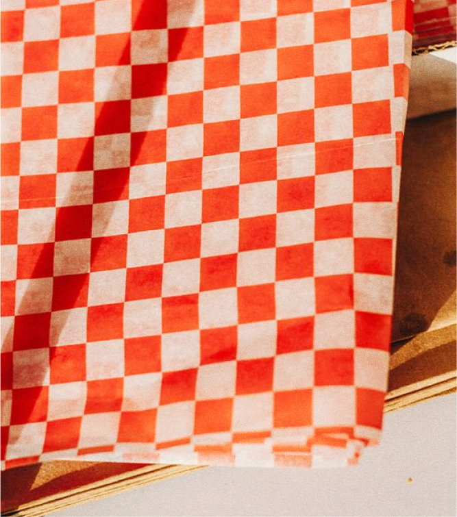
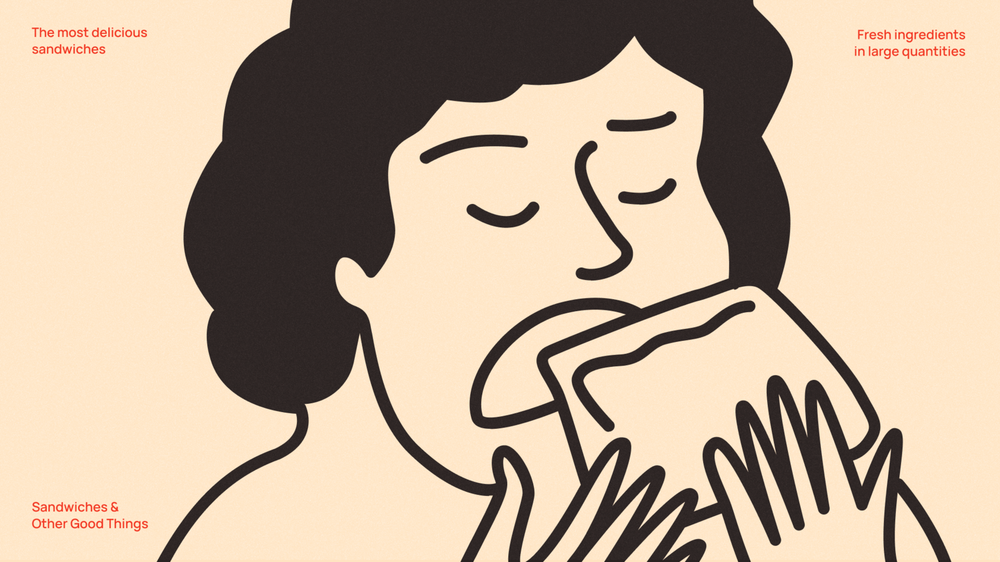
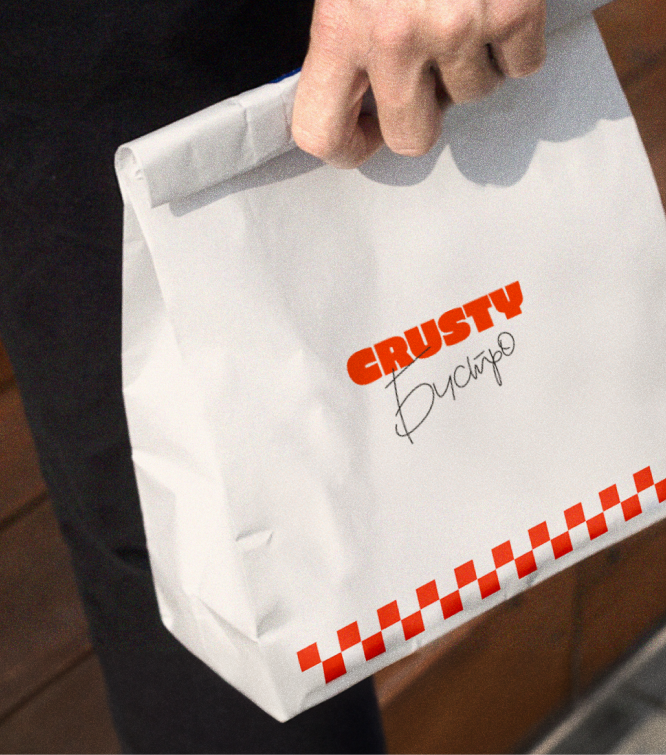
Следующий проект
Мэтч